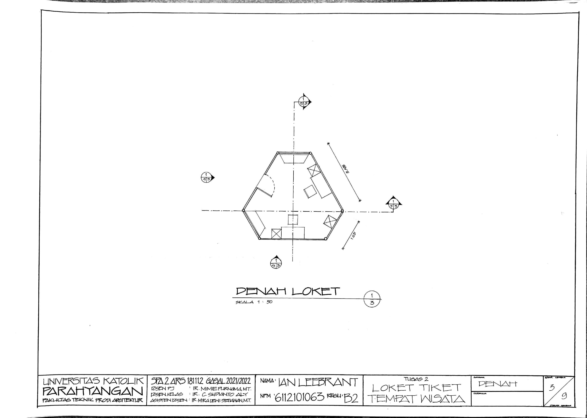
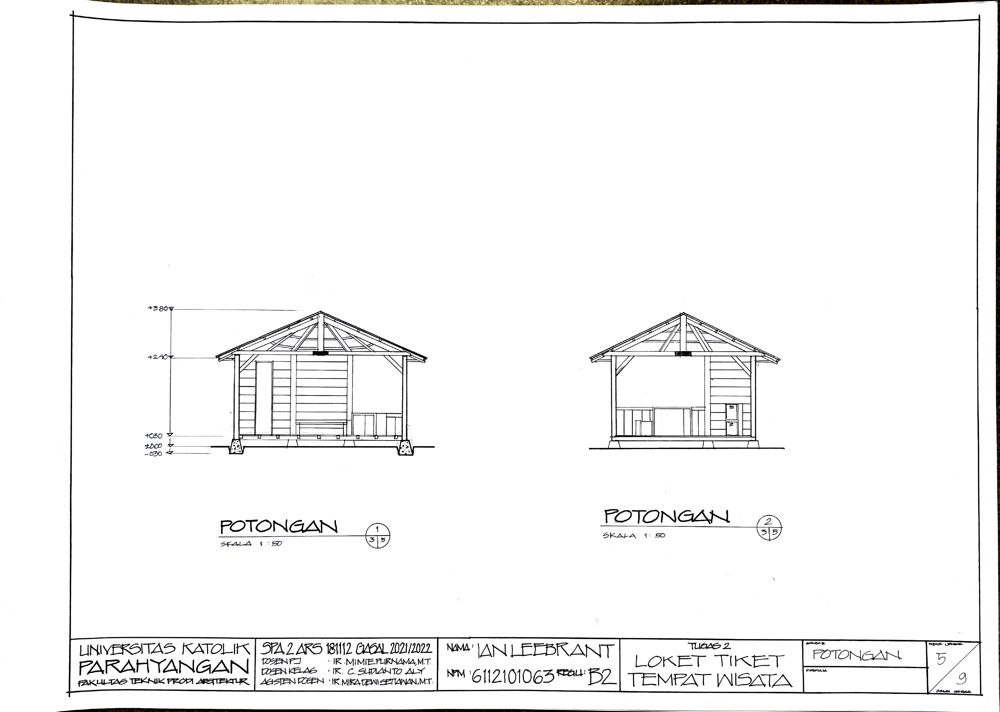
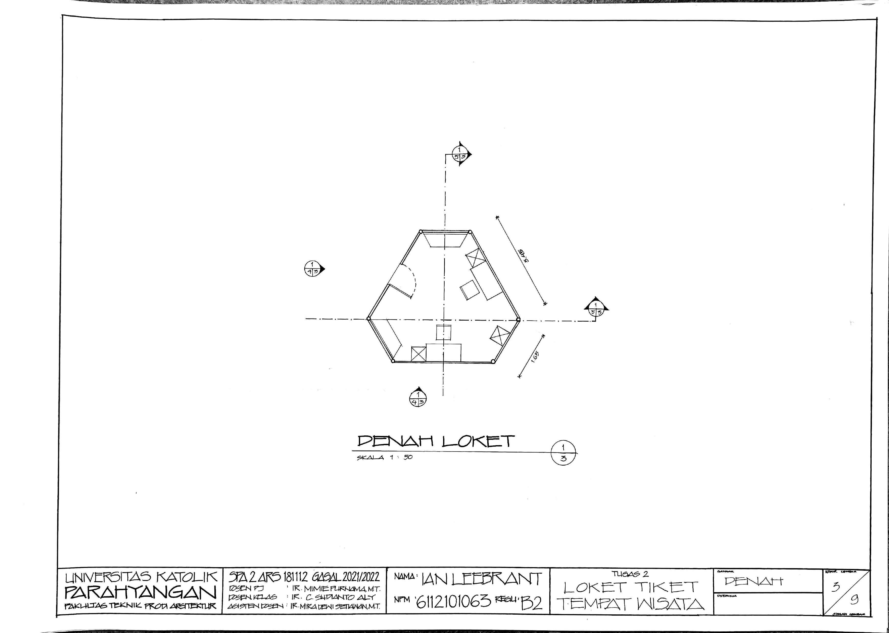
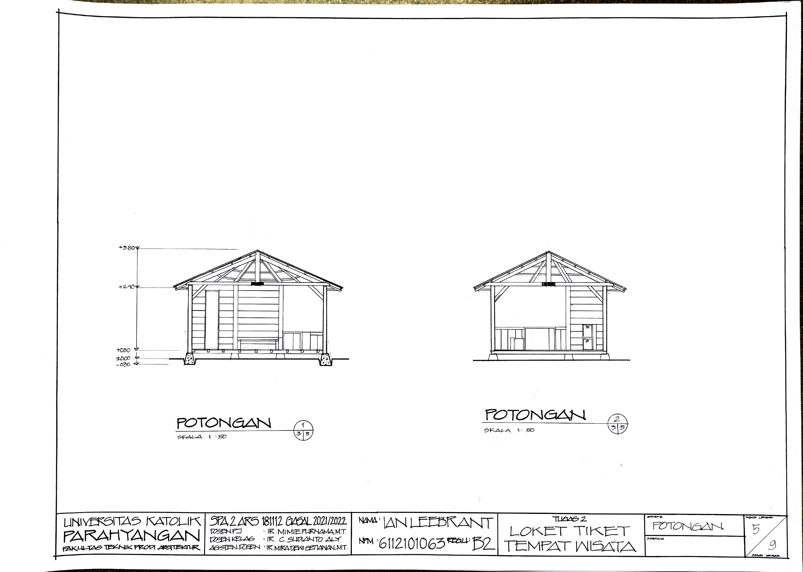
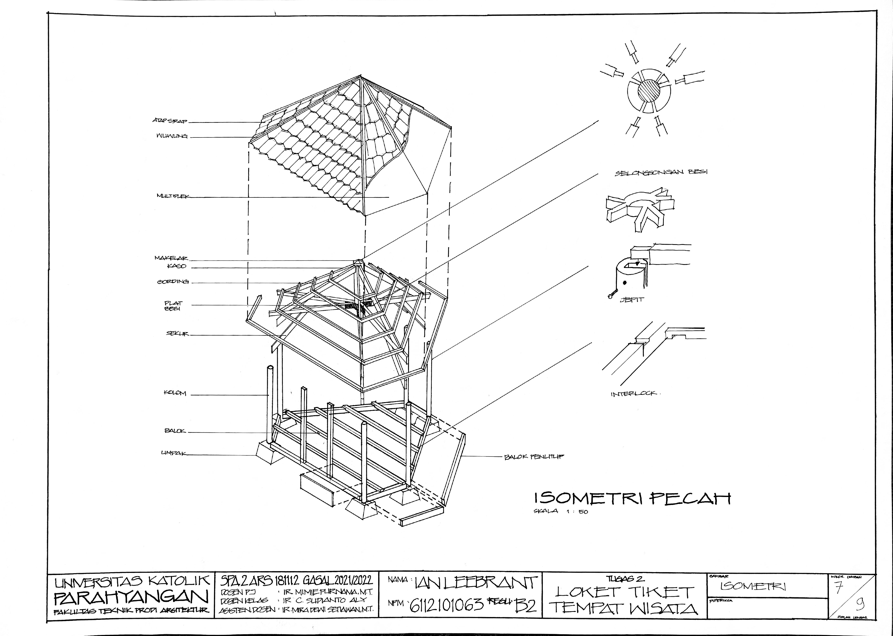
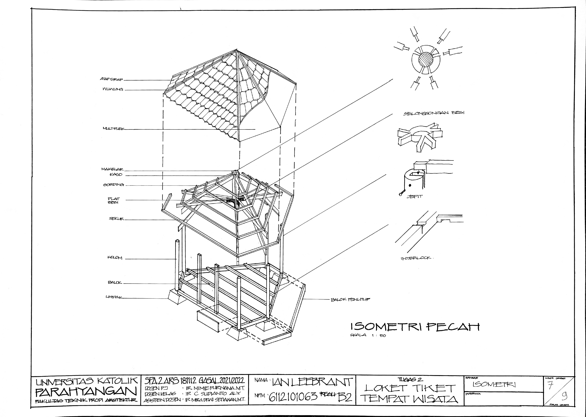
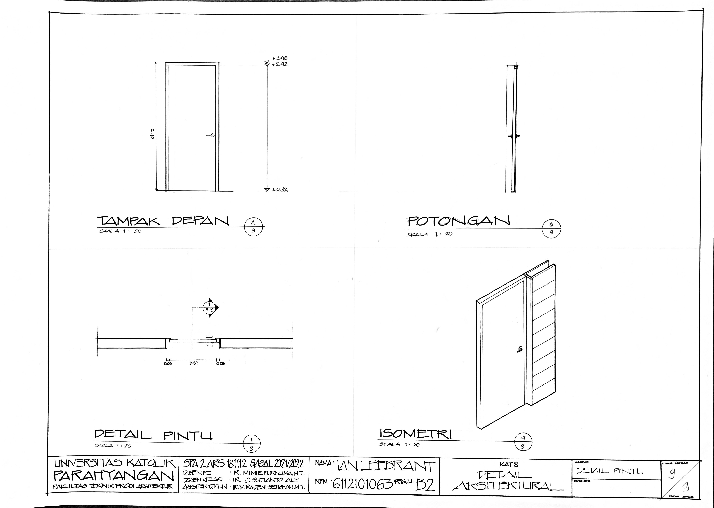
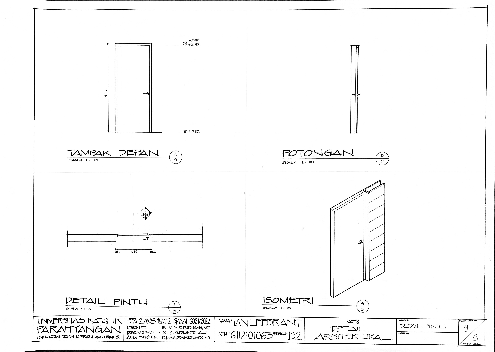

Loket Tiket
This ticket counter project takes place at Curug Pelangi, a natural tourist spot.
In this design, the form analogy that becomes the inspiration is the surrounding hills of the waterfall area,
abstracting the triangular shape by eliminating the acute angle so as to change the shape into a hexagon.
Determining the zoning of public areas and sterile areas after people have purchased tickets,
became a new observation for me as a 2nd semester student, the placement of the Counter mass is determined by the circulation scheme that will be generated for the visitors.
with a circulation scheme that will be created for ticket queues and other areas that are utilized as waiting areas and areas that have previews.
as a waiting area and an area that has its own rainbow waterfall overview. The site design is made to
create an atmosphere that looks visually integrated by combining pavement materials such as wood, concrete,
street furniture seating, small ponds, grass and small-sized vegetation.
 



 


 
